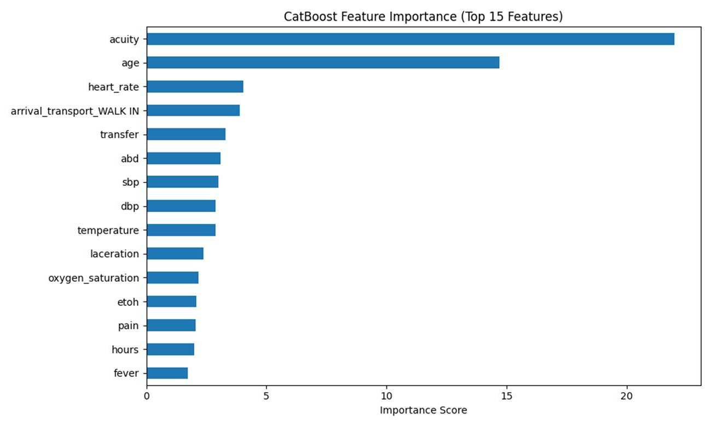
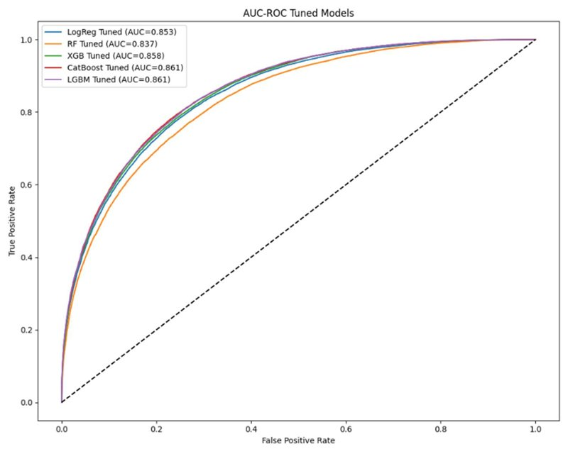

Predicting Emergency Department Admissions
Graduate class project · Applied Data Science, Clemson University, Spring 2025
347,360visits in the analysis dataset
550features (50 structured + 500 text)
0.863best ROC-AUC (CatBoost)
Problem
Knowing early which emergency department patients will be admitted helps hospitals plan beds and staff. This project predicted admission versus discharge from information available at triage, using the MIMIC-IV-ED research database.
Approach
- Joined the ED stay, triage, and patient tables and cleaned 425,011 initial visits to an analysis set of 347,360.
- Built 50 structured predictors (vital signs, acuity, age, arrival mode) and 500 TF-IDF features from the free-text chief complaint.
- Compared logistic regression, random forest, XGBoost, CatBoost, and LightGBM on an 80/20 stratified split with three-fold cross-validated grid search.
- Evaluated ROC-AUC, precision, recall, F1, confusion matrices, decision thresholds, and feature importance.
Results
- CatBoost reached the best ROC-AUC (0.863), ahead of logistic regression (0.853).
- Triage acuity and age were by far the strongest predictors, followed by heart rate, arrival mode, and transfer status.


Skills
Pythonpandasscikit-learnGradient BoostingText Features (TF-IDF)Cross-ValidationHealthcare Data
Tools: Python, pandas, scikit-learn, XGBoost, CatBoost, LightGBM